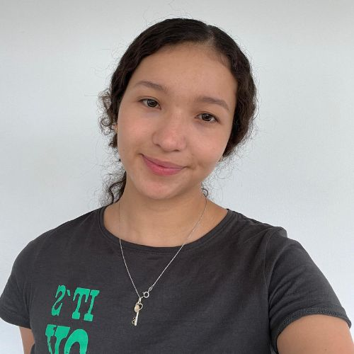

Nuestro Equipo
Diego Gómez
Ingeniero de Sistemas

Daniel Tavera
Ingeniero de Sistemas
María Isabella Meneses
Ingeniera Industrial

Ana Sofía Villamizar
Ingeniera Industrial
Yina Agredo
Ingeniera de Petróleos
César Sierra
Geólogo
Angelica Chacon
Ingeniera Química